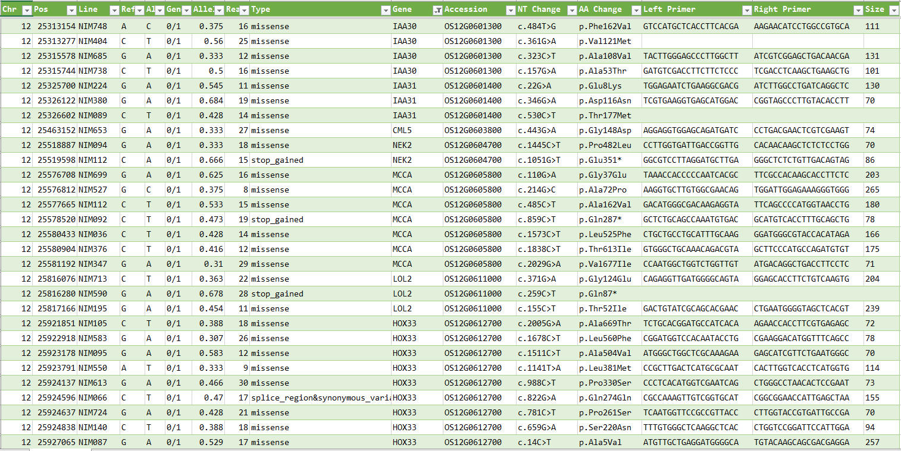

SNP List of Rice (Nipponbare) MNU Mutant Lines
[Link to Top Page]
This is a list of polymorphisms detected using PED from the NGS sequences of Nipponbare MNU-treated mutant lines distributed by NBRP (Kyushu University).
- Click on the image to enlarge it.

- The data, categorized by chromosome, can be downloaded via

- The list also includes sequences of primer pairs used to amplify the mutated regions.
- Annotations related to polymorphisms have been added using snpEff.
- Column order is chromosome number, position, line name, ref, alt, genotype, allele frequency, number of reads, mutation type, gene name, RAP ID, position of nucleotide sequence of gene, position of amino acid sequence of gene, left primer, right primer and amplified size.
- Seeds can be obtained from NBRP (Kyushu University).
- SNPs have already been published in the MiRiQ database. These SNPs were detected using BWA-mem and GATK, and can be compared with the polymorphisms detected by PED.
Since there are SNPs detected only by MiRiQ or only by PED, both can be used complementarily.
Importing Data into Excel
- The files are in tab-delimited text format, which is convenient for importing into Excel.
- Download the mnu.zip file from the "SNP List of Rice (Nipponbare) MNU Mutant Lines" page and unzip it.
- In Excel, open the data tab and click on "From Text/CSV" to open the file for the desired chromosome.
- When the Power Query editor opens, set Column6 to text type, then click "Close & Load" to import the data into Excel.
- You can filter by the desired gene or ID using the dropdown in Column J (Gene name) or Column K (Rap ID).
- In the case of nonsense mutations or frameshift mutations, it is considered that the gene’s activity is lost.
- For missense mutations, the gene’s activity may be reduced (or rarely increased) depending on the affected region or the type of substituted amino acid.
- Amplify the mutated region using primers and PCR on the DNA of the progeny to verify if the mutation has been introduced by sequencing the region.
- The primers are designed to be short, making them effective for polymorphism detection through methods such as High-Resolution Melting (HRM) analysis.
References
- Kubo et al. (2024) MiRiQ Database: A Platform for In Silico Rice Mutant Screening. Plant Cell Physiol. 65:169-174. https://doi.org/10.1093/pcp/pcad134
When publishing analysis results of lines obtained from NBRP (Kyushu University), please cite this paper.
- Cingolani, P., Platts, A., Wang, L. L., Coon, M., et al. (2012). A program for annotating and predicting the effects of single nucleotide polymorphisms, SnpEff: SNPs in the genome of Drosophila melanogaster strain w1118; iso-2; iso-3. Fly, 6(2), 80-92. https://doi.org/10.4161/fly.19695
- The paper on PED used for polymorphism detection: Miyao, A., Kiyomiya, J.S., Iida, K. et al. (2019). Polymorphic edge detection (PED): two efficient methods of polymorphism detection from next-generation sequencing data. BMC Bioinformatics 20, 362. https://doi.org/10.1186/s12859-019-2955-6
- Polymorphism Data:Miyao, A. (2024). SNP List of Rice (Nipponbare) MNU Mutant Lines [Data set]. Zenodo. https://doi.org/10.5281/zenodo.13373529
- Script: https://github.com/akiomiyao/ped/
Contact
Akio Miyao (miyao@affrc.go.jp), NARO